Introduction
Introduction.RmdInstalling pepreporting
Begin by installing the package from GitHub. The source code is available on the tbep-tech GitHub group web page: https://github.com/tbep-tech/pepreporting.
First, install the devtools package, load devtools, then install and load pepreporting. Note that pepreporting only needs to be installed once, but it needs to be loaded every new R session (i.e., library(pepreporting)).
install.packages('devtools') library(devtools) install_github('tbep-tech/pepreporting') library(pepreporting)
The following shows all functions provided in pepreporting, organized by prefix.
Read
-
read_pepwq(): Load local water quality file
Analyze
anlz_attainpep(): Get attainment categoriesanlz_medpep(): Estimate annual medians
Show
show_boxpep(): Plot monthly chlorophyll or secchi depth values for a bay segmentshow_matrixpep(): Create a colorized table for indicator reportingshow_reactablepep(): Create a reactable table for reporting matrices, used internally onlyshow_sitemappep(): Map water quality data for a selected yearshow_thrpep(): Plot annual water quality values and thresholds for a bay segmentshow_plotlypep(): Plot chlorophyll and secchi data together with matrix outcomesshow_wqmatrixpep(): Create a colorized table for chlorophyll or secchi exceedancesshow_segmatrixpep(): Create a colorized table for water quality outcomes and exceedances by segment
Basic use
The package includes a pepstations data object that includes metadata for each station, including lat/lon and bay segment.
prj <- 4326 locs <- pepstations %>% st_as_sf(coords = c('Longitude', 'Latitude'), crs = prj) mapview(locs, zcol = 'bay_segment', layer.name = 'Bay segment', map.types = mptyps)
The water quality data can be imported using the read_pepwq() function. A compressed folder that includes the data can be downloaded from here. After the data are downloaded and extracted, the Excel file with the raw data is named “Peconics SCDHS WQ data - up to 2019 so far.xlsx”, or something similar depending on when the data were downloaded. The location of this file on your computer is passed to the import function. Below, a local file renamed as “currentdata.xlsx” that contains the water quality data is downloaded.
dat <- read_pepwq('../inst/extdata/currentdata.xlsx') head(dat) #> # A tibble: 6 x 11 #> Date BayStation name value status yr mo StationName bay_segment #> <date> <chr> <chr> <dbl> <chr> <dbl> <dbl> <chr> <fct> #> 1 1976-07-20 60130 chla 4.55 "" 1976 7 Great Peco~ Western #> 2 1976-07-20 60130 sd 4.5 "" 1976 7 Great Peco~ Western #> 3 1976-07-20 60170 chla 5.75 "" 1976 7 Flanders B~ Western #> 4 1976-07-20 60170 sd 6 "" 1976 7 Flanders B~ Western #> 5 1976-07-20 60210 chla 8.5 "" 1976 7 Reeves Bay Western #> 6 1976-07-20 60210 sd 4 "" 1976 7 Reeves Bay Western #> # ... with 2 more variables: Longitude <dbl>, Latitude <dbl>
The raw data includes multiple fields, but only the chlorophyll and secchi data are retained for reporting. The data are in long format with the name column showing which observation (chlorophyll or secchi) the row value shows and the status showing if the observation was above or below detection (indicated as > or <). Each station is also grouped by major bay segment, defined as Western, Central, Eastern.
A quick view of the number of observations and length of record at each station shows that effort was not continuous.
toplo <- dat %>% select(bay_segment, BayStation, yr, name, value) %>% group_by(bay_segment, BayStation, yr, name) %>% summarise(`Obs. (n)` = n()) p <- ggplot(toplo, aes(x = yr, y = BayStation, fill = `Obs. (n)`)) + geom_tile()+ #colour = 'lightgrey') + facet_grid(bay_segment ~ name, scales = 'free_y', space = 'free_y') + theme_bw() + theme( panel.grid.major = element_blank(), panel.grid.minor= element_blank(), strip.background = element_blank(), axis.title.x = element_blank(), legend.position = 'top', axis.text.y = element_text(size = 7) ) + scale_fill_viridis_c() p
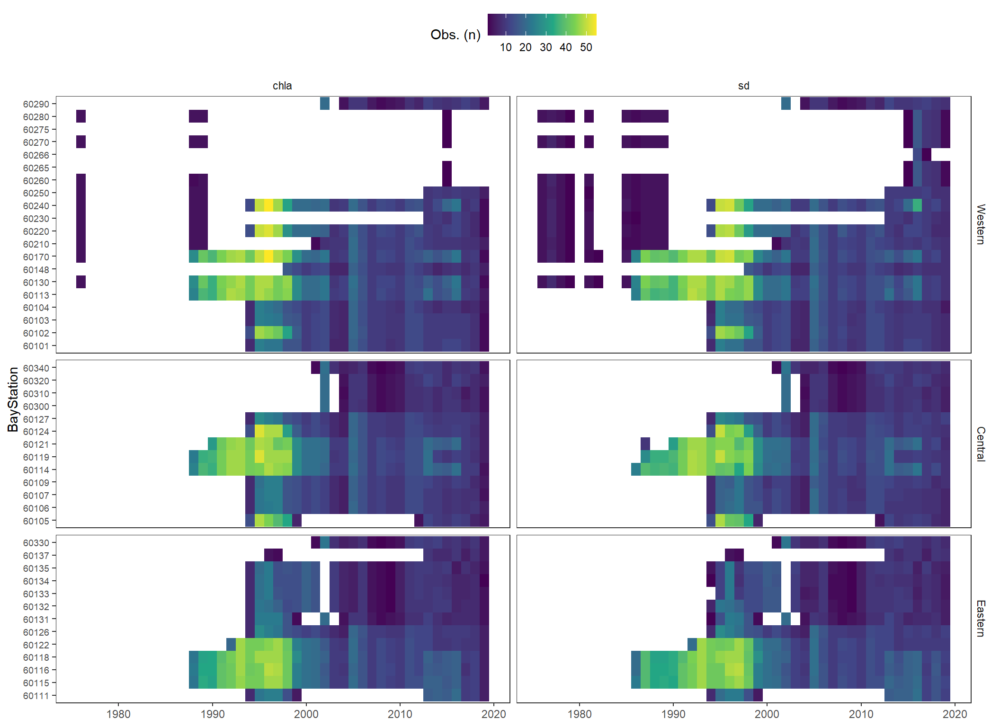
The function anlz_pepdat() summarizes the station data by bay segment. The function returns annual means for chlorophyll and secchi depth and monthly means by year for chlorophyll and secchi depth. These summaries are then used to determine if bay segment targets for water quality are met using the anlz_attain() and anlz_attainpep() function.
Below shows how to use anlz_pepdat() to summarize the data by bay segment to estimate annual and monthly means for chlorophyll and secchi depth. The output is a two-element list for the annual (ann) and monthly (mos) means by segment.
medpep <- anlz_medpep(dat) medpep #> $ann #> # A tibble: 792 x 5 #> bay_segment yr val est var #> <fct> <dbl> <dbl> <chr> <chr> #> 1 Western 1976 9.90 lwr.ci chla #> 2 Western 1976 26.8 medv chla #> 3 Western 1976 44.9 upr.ci chla #> 4 Western 1977 NA lwr.ci chla #> 5 Western 1977 NA medv chla #> 6 Western 1977 NA upr.ci chla #> 7 Western 1978 NA lwr.ci chla #> 8 Western 1978 NA medv chla #> 9 Western 1978 NA upr.ci chla #> 10 Western 1979 NA lwr.ci chla #> # ... with 782 more rows #> #> $mos #> # A tibble: 3,168 x 6 #> bay_segment yr mo val est var #> <fct> <dbl> <dbl> <dbl> <chr> <chr> #> 1 Western 1976 1 NA medv chla #> 2 Western 1976 2 NA medv chla #> 3 Western 1976 3 NA medv chla #> 4 Western 1976 4 NA medv chla #> 5 Western 1976 5 NA medv chla #> 6 Western 1976 6 NA medv chla #> 7 Western 1976 7 30.8 medv chla #> 8 Western 1976 8 40.4 medv chla #> 9 Western 1976 9 16.9 medv chla #> 10 Western 1976 10 NA medv chla #> # ... with 3,158 more rows
This output can then be further analyzed with anlz_attainpep() to determine if the bay segment outcomes are met in each year. The results are used by the plotting functions described below. In short, the chl_sd column indicates the categorical outcome for chlorophyll and light attenuation for each segment. The outcomes are integer values from zero to three. The relative exceedances of water quality thresholds for each segment, both in duration and magnitude, are indicated by higher integer values.
anlz_attainpep(medpep) #> # A tibble: 132 x 4 #> bay_segment yr chla_sd outcome #> <fct> <dbl> <chr> <chr> #> 1 Western 1976 3_3 red #> 2 Western 1977 NA_3 <NA> #> 3 Western 1978 NA_2 <NA> #> 4 Western 1979 NA_NA <NA> #> 5 Western 1980 NA_NA <NA> #> 6 Western 1981 NA_3 <NA> #> 7 Western 1982 NA_NA <NA> #> 8 Western 1983 NA_NA <NA> #> 9 Western 1984 NA_NA <NA> #> 10 Western 1985 NA_3 <NA> #> # ... with 122 more rows
Plotting
The plotting functions are used to view station data, long-term trends for each bay segment, and annual results for the overall water quality assessment.
The show_sitemappep() function produces an interactive map of annual medians of water quality conditions at each station. Medians can be shown for chlorophyll or secchi depth and for all stations or only stations from selected bay segments. Each point on the map shows the annual median for the parameter, with the size and color of the point in proportion to the other median values shown on the map. The color scale for the median shows higher concentrations of chlorophyll or shallower secchi depths in red and lower concentrations of chlorophyll or deeper secchi depths in blue. Hovering the mouse pointer over a site location will indicate the site name and the median value. Clicking on a station point will reveal the underlying plot data.
Here, the 2019 chlorophyll medians are shown for stations in all bay segments.
show_sitemappep(dat, 2019)
A different year, parameter, and bay segment can also be chosen. Note that the size and color ramps are reversed for secchi depth, such that smaller and bluer points indicate larger secchi values.
show_sitemappep(dat, 2010, 'sd', c('Central', 'Eastern'))
By default, the color and size scaling in show_sitemappep() is relative to only the points on the map. You can view scaling relative to all values in the dataset (across time and space) to get a sense of how the values for the selected year compare to the rest of the record. This can be done by changing the relative argument to TRUE.
show_sitemappep(dat, 2019, relative = T)
The scaling is also sensitive to outliers. The default is to use the maximum scaling as the 99th percentile value observed in the entire dataset for the chosen parameter. Otherwise, non-sensical results will be returned if the absolute maximum value is used to set the scale. If, however, you want to see scaling relative to a smaller quantile, you can choose it accordingly with the maxrel argument. The size and color ramps will be scaled to the defined upper quantile value. The actual observed value at a point will always be visible on mouseover.
show_sitemappep(dat, 2019, relative = T, maxrel = 0.8)
The show_thrpep() function provides a more descriptive assessment of annual trends for a chosen bay segment relative to thresholds. In this plot we show the annual medians and non-parametric confidence internals (95%) across stations for a segment. The red line shows annual trends and the horizontal blue line indicates the threshold for chlorophyll-a.
show_thrpep(dat, bay_segment = "Western", param = "chla")
We can show the same plot but for secchi depth by changing the param = "chla" to param = "sd". Note the change in the horizontal reference lines for the secchi depth target. Secchi trends must also be interpreted inversely to chlorophyll, such that lower values generally indicate less desirable water quality.
show_thrpep(dat, bay_segment = "Western", param = "sd")
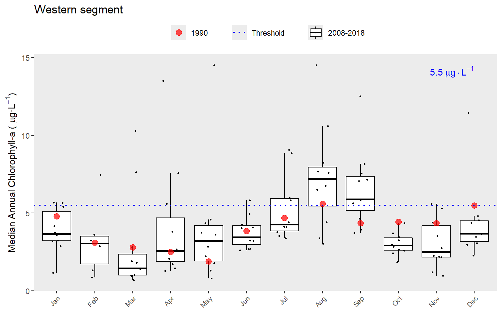
The year range to plot can also be specified using the yrrng argument, where the default is yrrng = c(1990, 2019).
show_thrpep(dat, bay_segment = "Western", param = "chla", yrrng = c(1976, 2019))
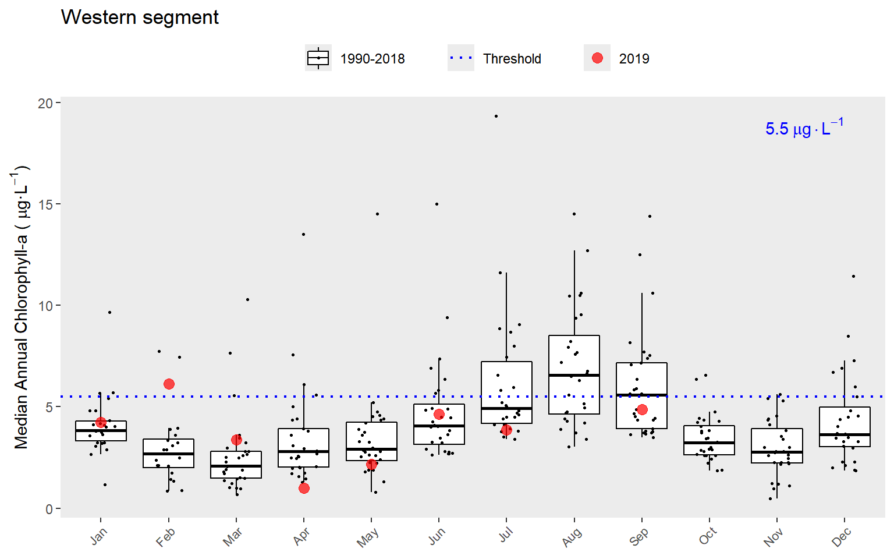
The show_thrpep() function uses results from the anlz_medpep() function. For example, you can retrieve the values from the above plot as follows:
dat %>% anlz_medpep %>% .[['ann']] %>% filter(bay_segment == 'Western') %>% filter(var == 'chla') %>% filter(yr >= 1988 & yr <= 2019) #> # A tibble: 96 x 5 #> bay_segment yr val est var #> <fct> <dbl> <dbl> <chr> <chr> #> 1 Western 1988 10.1 lwr.ci chla #> 2 Western 1988 11 medv chla #> 3 Western 1988 12.4 upr.ci chla #> 4 Western 1989 5.4 lwr.ci chla #> 5 Western 1989 5.8 medv chla #> 6 Western 1989 6.3 upr.ci chla #> 7 Western 1990 3.5 lwr.ci chla #> 8 Western 1990 4 medv chla #> 9 Western 1990 4.7 upr.ci chla #> 10 Western 1991 4 lwr.ci chla #> # ... with 86 more rows
Similarly, the show_boxpep() function provides an assessment of seasonal changes in chlorophyll or secchi depth values by bay segment. The most recent year is highlighted in red by default. This allows a simple evaluation of how the most recent year compared to historical averages. The threshold value is shown in blue text and as the dotted line. This is the same dotted line shown in show_thrpep().
show_boxpep(dat, param = 'chla', bay_segment = "Western")
show_boxpep(dat, param = 'sd', bay_segment = "Eastern")
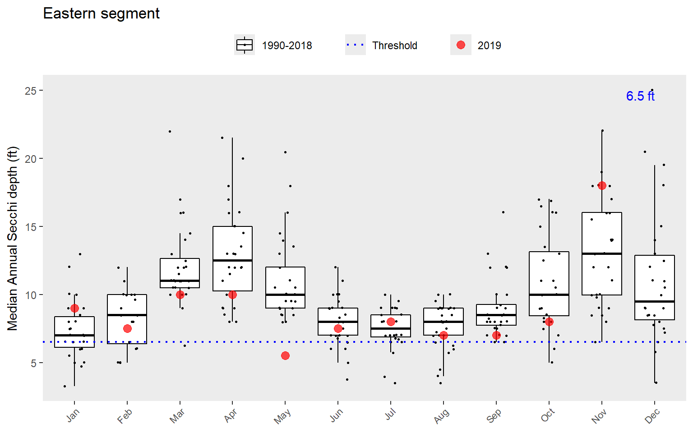
A different subset of years and selected year of interest can also be viewed by changing the yrrng and yrsel arguments. Here we show 1980 compared to monthly averages for the last ten years.
show_boxpep(dat, param = 'chla', bay_segment = "Western", yrrng = c(2008, 2018), yrsel = 1990)
The show_thrpep() function is useful to understand annual variation in chlorophyll and secchi depth relative to thresholds for each bay segment. The information from these plots can provide an understanding of how the annual reporting outcomes are determined. An outcome integer from zero to three is assigned to each bay segment for each annual estimate of chlorophyll and secchi depth. These outcomes are based on both the exceedance of the annual estimate above the threshold (blue lines in show_thrpep()) and duration of the exceedance for the years prior. The following graphic describes this logic [1].

Outcomes for annual estimates of water quality are assigned an integer value from zero to three depending on both magnitude and duration of the exceedence.
For the Peconic Estuary, light attenuation is replaced with Secchi depth. The outcomes above are assigned for both chlorophyll and secchi depth. The duration criteria are determined based on whether the exceedance was observed for years prior to the current year. The exceedance criteria for chlorophyll and light-attenuation are currently the same for each segment. The pepreporting package contains a peptargets data file that is a reference for determining annual outcomes. This file is loaded automatically with the package and can be viewed from the command line.
peptargets #> # A tibble: 3 x 4 #> bay_segment name sd_thresh chla_thresh #> <fct> <chr> <dbl> <dbl> #> 1 Western Western 6.5 5.5 #> 2 Central Central 6.5 5.5 #> 3 Eastern Eastern 6.5 5.5
The final plotting function is show_matrixpep(), which creates an annual reporting matrix that reflects the combined outcomes for chlorophyll and secchi depth. Tracking the attainment outcomes provides the framework from which bay management actions can be developed and initiated. For each year and segment, a color-coded management action is assigned:
Stay the Course: Continue planned projects. Report data via annual progress reports and Baywide Environmental Monitoring Report.
Caution: Review monitoring data and nitrogen loading estimates. Begin/continue TAC and Management Board development of specific management recommendations.
On Alert: Finalize development and implement appropriate management actions to get back on track.
The management category or action is based on the combination of outcomes for chlorophyll and secchi depth [1].

Management action categories assigned to each bay segment and year based on chlorophyll and secchi depth outcomes.
The results can be viewed with show_matrixpep().
show_matrixpep(dat)
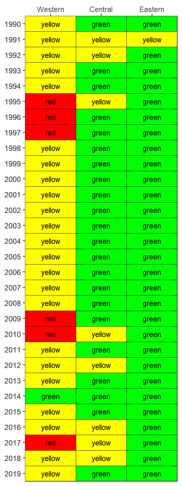
The matrix is also a ggplot object and its layout can be changed using ggplot elements. Note the use of txtsz = NULL to remove the color labels.
show_matrixpep(dat, txtsz = NULL) + scale_y_continuous(expand = c(0,0), breaks = c(1976:2019)) + coord_flip() + theme(axis.text.x = element_text(angle = 45, hjust = 1, size = 7))
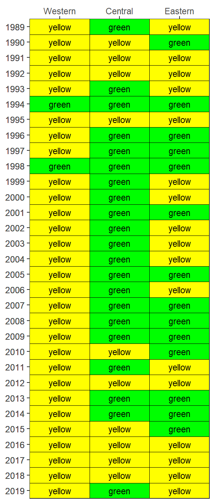
If preferred, the matrix can also be returned in an HTML table that can be sorted and scrolled.
show_matrixpep(dat, asreact = TRUE)
Use a sufficiently large number to view the entire matrix.
show_matrixpep(dat, asreact = TRUE, nrows = 200)
Bay segment exceedances can also be viewed in a matrix using show_wqmatrixpep(). The red/green outcome categories indicate if the median was above/below the threshold. However, the small/large exceedances used for the overall report card depend on degree of overlap of the confidence intervals with the threshold. The matrix outcome below are a simplification that shows a binary outcome (red/green) for location of the median relative to the threshold.
show_wqmatrixpep(dat)
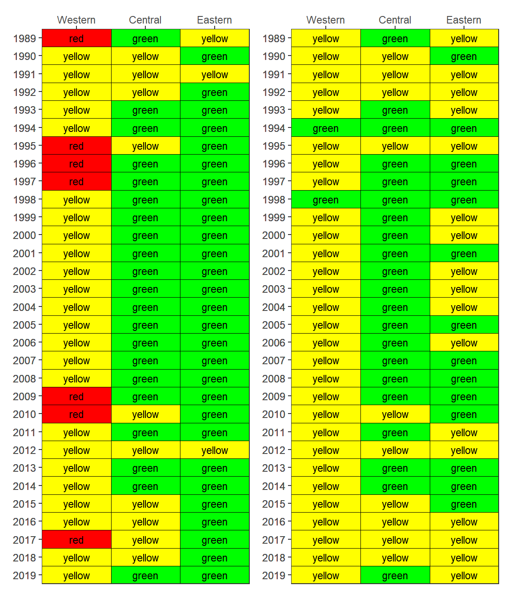
By default, the show_wqmatrixpep() function returns chlorophyll exceedances by segment. Secchi depth exceedances can be viewed by changing the param argument. Note that exceedances are reversed, i.e., lower values are considered less desirable water quality conditions for Secchi.
show_wqmatrixpep(dat, param = 'sd')
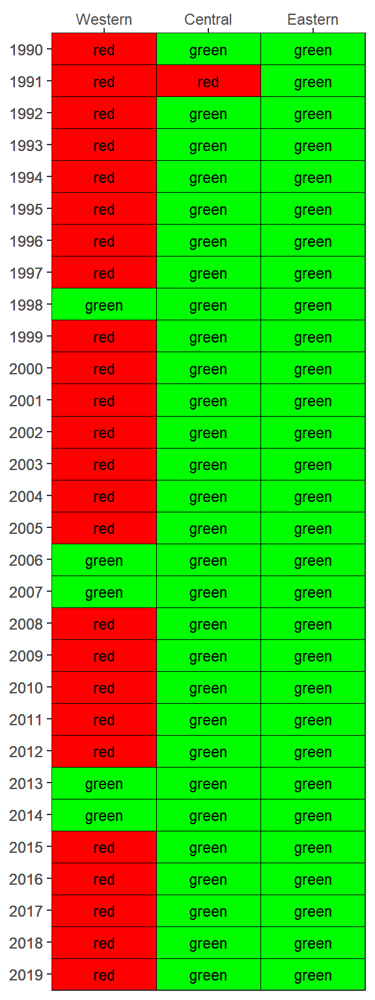
The results from show_matrixpep() for both secchi and chlorophyll can be combined for an individual segment using the show_segmatrixpep() function. Only one segment can be plotted for each function call.
show_segmatrixpep(dat, bay_segment = 'Western')
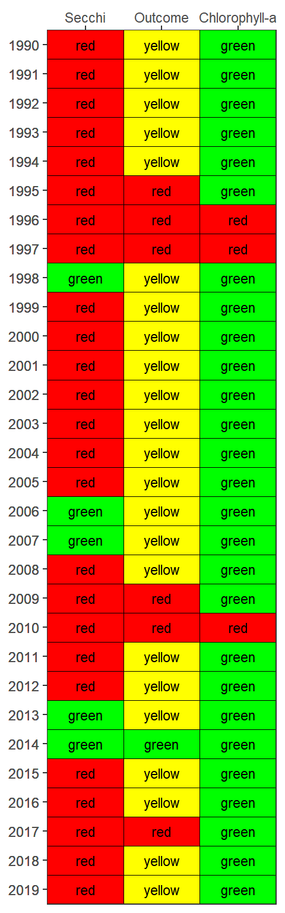
Finally, all segment plots can be shown together using the show_plotlypep() function that combines chlorophyll and secchi data for a given segment. This function combines outputs from show_thrpep() and show_segmatrixpep(). The final plot is interactive and can be zoomed by dragging the mouse pointer over a section of the plot. Information about each cell or value can be seen by hovering over a location in the plot.
show_plotlypep(rawdat)
Testing different thresholds
By default, all plotting functions use the peptargets data frame included with the package, which assigns a threshold of 6.5 ft for secchi depth and 5.5 ug/L for chlorophyll to all segments. All plotting arguments have an optional argument called trgs that accepts user-provided thresholds. A new data frame can be passed to this argument to evaluate different thresholds. The following demonstrates how to create a custom thresholds data frame (a tibble specifically) and use it to evaluate changes on reporting outcomes. For examples, perhaps less stringent thresholds are required for the Western segment (lower secchi, higher chlorophyll) and more stringent thresholds are required for the Eastern segment (higher secchi, lower chlorophyll).
segs <- c('Western', 'Central', 'Eastern') newtrgs <- tibble( bay_segment = factor(segs, levels = segs), name = factor(segs, levels = segs), sd_thresh = c(5.5, 6.5, 7.5), chla_thresh = c(6, 5.5, 5) )
This new data frame can be passed to the plotting functions.
newthr <- show_matrixpep(dat, trgs = newtrgs) newthr
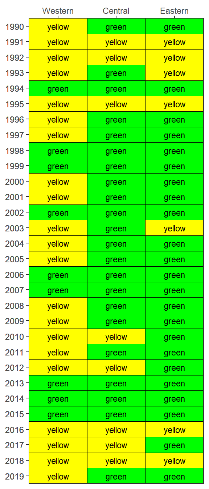
Comparing the default values with the new results can easily be done by plotting the two side by side.
oldthr <- show_matrixpep(dat) oldthr + newthr + plot_layout(ncol = 2)
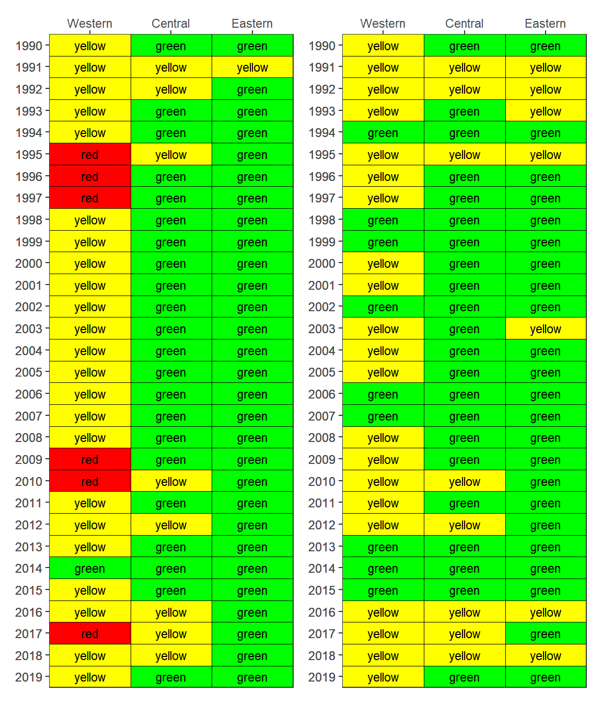
References
[1] A. Janicki, D. Wade, J.R. Pribble, Development of a process to track the status of chlorophyll and light attenuation to support seagrass restoration goals in Tampa Bay, Tampa Bay National Estuary Program, St. Petersburg, Florida, 1999. https://tbeptech.org/TBEP_TECH_PUBS/2000/TBEP_04_00Chlor-A.pdf.